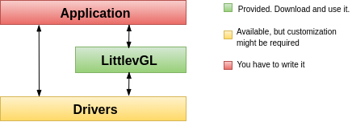
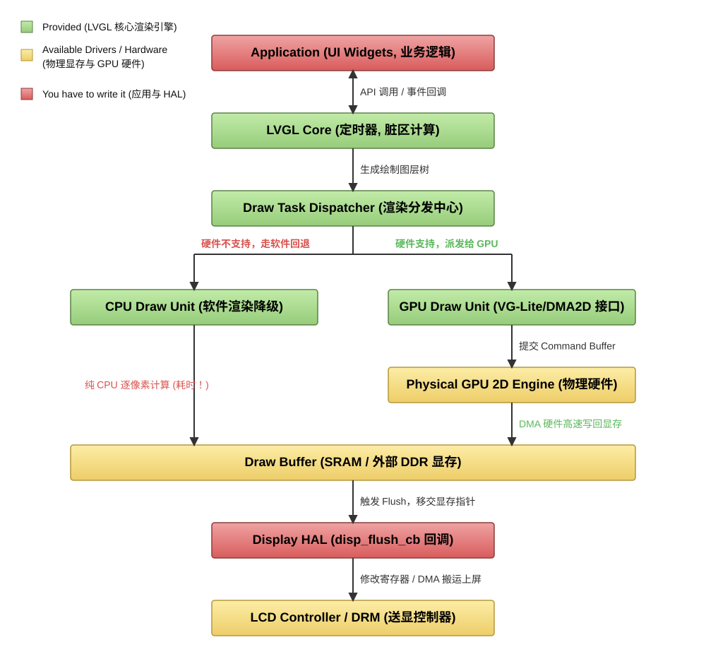
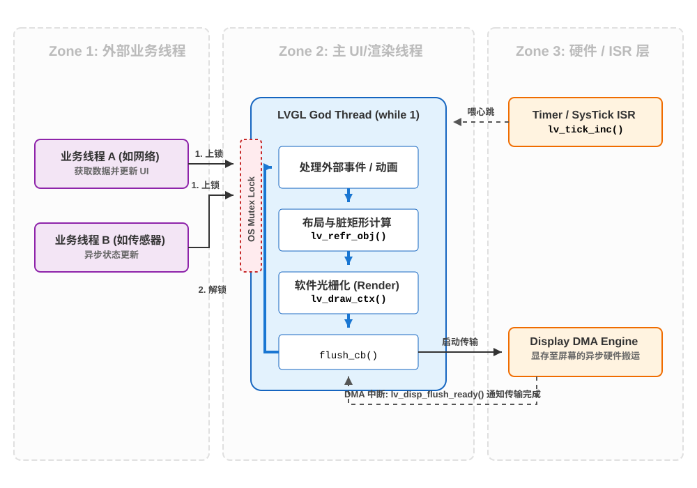

1. 目录
2. 参考
https://lvgl.100ask.net/7.11/documentation/02_porting/02_project.html 百问王LVGL中文教程手册文档
3. 与安卓/weston对比理解

3.1. 模块架构

3.2. 线程结构 ------ 驱动力

结论：
1、只有一个UI线程（也是渲染线程）
2、接受硬件中断！！！！
3.3. 美好之冲突解决（硬件中断与软件冲突）
冲突：
我很难理解这个硬件中断，即使他快如闪电，但是对于UI线程来说，也是致命的，比如UI线程正在读一个变量，中断立刻改变了它。那么对于UI线程来说，这个变量就是不可预测的，不稳定的
果没有额外的保护机制，硬件中断对于正在读取同一块内存的 UI 线程来说就是毁灭性的。
-软 + 软的冲突：用mutex锁
硬件（Tick ISR） vs 软件（LVGL 主 UI 线程）-----调度者不同：
- LVGL 主 UI 线程（Thread）： 它运行在线程上下文（Thread Context）。它的生杀大权掌握在操作系统的软件调度器（Scheduler）手里。OS 可以让它挂起（Suspend）、睡眠（Sleep）、或者时间片用完后把它切走。
- Tick ISR（Interrupt）： 它运行在中断上下文（Interrupt Context）。它的生杀大权掌握在 CPU 内部的硬件中断控制器（如 ARM 的 NVIC）手里。只要硬件定时器的时间一到，电平一翻转，无论主 UI 线程正在执行多么关键的代码，都会被瞬间强制打断（抢占），CPU 会立刻跳去执行 ISR 的代码。
3.3.1. 方法一：关中断（UI线程主控）
当 UI 线程需要读取或修改这种“会被中断修改的共享变量”时，它会进入一个叫做临界区（Critical Section）的绝对安全领域。
uint32_t lv_tick_get(void)
{
uint32_t result;
/* 1. 物理屏蔽全局中断（降下绝对防御护盾）*/
__disable_irq();
/* ---------------- 临界区开始 ---------------- */
/* 此时任何硬件定时器哪怕到了时间，CPU 也绝对不理它，只能在门外憋着（挂起/Pending） */
result = sys_tick; /* 2. 绝对安全地读取，哪怕它是 64 位的，也不会被撕裂 */
/* ---------------- 临界区结束 ---------------- */
/* 3. 恢复全局中断（撤销护盾） */
/* 刚才在门外憋着的中断，会在这条指令执行后的一瞬间，立刻劈进来执行 */
__enable_irq();
return result;
}
-------------------------->缺点：__disable_irq()与平台相关 （文件里硬编码了某一种硬件的关中断指令，它就丧失了通用性）
3.3.2. 方法二：乐观并发控制（无锁解决冲突）
LVGL 原生代码中，并没有使用“拔掉物理中断插头（硬件临界区）”这种方法。
平台无关性：
LVGL 的最高设计哲学是绝对的平台无关性（Platform Agnostic）。
它根本不知道自己是运行在 ARM Cortex-M（用 __disable_irq()）、还是 ESP32（用 portENTER_CRITICAL()）、亦或是 Linux 用户态。
/* 定义两个全局易失性变量 */
volatile uint32_t sys_time = 0; // 存储系统时间的变量
volatile uint8_t tick_irq_flag; // 哨兵旗帜
/* =========================================
* 运行在中断 (ISR) 中的代码：负责写
* ========================================= */
void lv_tick_inc(uint32_t tick_period)
{
tick_irq_flag = 0; /* 核心动作：只要中断触发，立刻把旗子“拔掉”！ */
sys_time += tick_period; /* 更新时间 */
}
/* =========================================
* 运行在主 UI 线程中的代码：负责读
* ========================================= */
uint32_t lv_tick_get(void)
{
uint32_t result;
/* 经典的多线程乐观读取循环 */
do {
tick_irq_flag = 1; /* 1. UI 线程先插上一面“旗子” */
result = sys_time; /* 2. 尝试读取系统时间（这一步可能发生数据撕裂） */
/* 3. 检查旗子还在不在？
如果旗子变成 0 了，说明在执行第 2 步的时候，中断像闪电一样劈进来了。
既然被打断了，刚才读出来的 result 肯定是错乱的，那我就废弃掉，再循环读一次！
如果旗子还是 1，说明刚才没被中断，数据是完美的，退出循环。 */
} while(!tick_irq_flag);
return result;
}
-绝妙之处：
-1、没有任何锁！！！！
2、零硬件依赖：全靠 C 语言的
while循环和基础变量控制，可以在任何一块几毛钱的单片机上完美编译运行。3、永远不阻塞中断：ISR（中断服务函数）永远处于最高优先级，它想写就写，不需要等待谁释放锁，保证了极高的实时响应。
4、极低的性能开销：在 99.99% 的情况下，UI 线程读取
sys_time的那一瞬间是不会恰好撞上中断的，所以while循环只会执行一次，几乎零损耗。只有在那极小概率撞车的情况下，它才会重新读一次。
生活化同构 --------- 一写多读（1读）：
多个人抄写高铁站的“滚动时刻表”（最完美的对应） 想象你正在高铁站候车，抬头看着那个巨大的滚动航班/列车信息大屏。 大屏的后台刷新系统 = 硬件中断 (ISR)： 它极其霸道，时间一到，“唰”地一下就会刷新屏幕上的车次信息。它绝对不可能因为有个旅客正在抄信息，就停下来等。 你 = UI 线程 (Reader)： 你的动作比较慢，你需要低头把“车次、站台号、发车时间”写到你的小本子上。 致命危机 (数据撕裂)： 假设大屏上显示“G123，站台5”。你刚在纸上写下“G123”，此时大屏“唰”地刷新了，变成了下一趟车“G456，站台8”。你低着头没发现，接着写了“站台8”。结果你的本子上记成了“G123，站台8”——这是一个完全错误、拼凑出来的假数据。跑去 8 站台你绝对会错过你的车。 互斥锁（加锁）的荒谬性： 如果你用“互斥锁”的思维，这就相当于你拿个大喇叭在候车大厅喊：“控制室注意！我正在抄信息，大屏立刻停止刷新！等我这 5 秒钟抄完了你再动！” 这显然是不可能的，会扰乱整个高铁站的运行。 LVGL 乐观锁（标志位重试）的日常做法： 事实上，作为一个有经验的旅客，你是这么做的： 设下标记 (Flag = 1)： 抄写前，你先看一眼屏幕右下角的一个 “正在显示第 1 页” 的小红点。 低头干活 (Read)： 你飞速地低头抄写。 抬头验货 (Check Flag)： 抄完后，你立刻抬头再看一眼右下角。 情况 A： 如果还是“第 1 页”，说明你低头的时候大屏没动。你抄的数据是 100% 完美 的，放心走人。 情况 B (重试)： 如果右下角变成了“第 2 页” (Flag 被后台系统改成了 0)，你立刻意识到：“糟了，我刚才抄的时候屏幕翻篇了！” 你叹了口气，把纸上的字划掉，等屏幕转回来，重新抄一遍。 这就是 LVGL do...while(!flag) 的本质：不锁屏幕，事后验证，如果变化，推倒重来。
本质特征：
写的刚性！！！！
最完美的归宿（使用条件）是：
一写多读
(1) 不是必要条件 （2）可以最大发挥价值（写的地方没有加锁，对其他读没有影响!!!）
写操作频率非常低（极难发生碰撞）
读操作毫无副作用
运行在单核且无复杂缓存机制的系统中
3.4. 代码路径结构
lvgl_workspace/
├── ⚙️ 1. 工程构建与环境配置 (Build & Environment) - [外层支撑]
│ ├── CMakeLists.txt ▶ [构建骨架] 定义编译目标和宏。决定了库是如何跨平台编译并链接到宿主系统（如 Linux/RTOS）的。
│ ├── library.properties ▶ [包管理] Arduino 等特定平台的依赖与版本识别文件。
│ ├── pack_code.py ▶ [自定义工具] 你上传的 Python 打包脚本，用于代码的提取和过滤。
│ ├── README.md ▶ [项目门面] 快速启动说明。
│ └── LICENCE.txt ▶ [合规声明] MIT 开源协议。
│
├── 🧠 2. 顶层 API 与静态契约 (API & Contracts) - [系统边界]
│ ├── lvgl.h ▶ [外观模式 API] 唯一对外的 C 头文件，向应用层屏蔽了 src/ 下所有的复杂内部实现。
│ ├── lv_version.h ▶ [版本控制] 编译期的版本宏定义，用于业务层做特性兼容。
│ └── lv_conf_template.h ▶ [静态裁剪总闸] 极其重要的配置文件模板！通过宏定义控制 `src/` 中各个组件的开关、显存分配和色深，实现极致的内存控制。
│
├── 🫀 3. 核心源码层 (src/ Engine) - [系统内核 - 重点展开]
│ ├── core/ ▶ [框架基石：DOM与事件流] 系统的“大脑”
│ │ ├── lv_obj.c/h -> 【核心对象模型】一切 UI 组件的基类。通过 C 语言结构体嵌套实现“继承”。管理父子层级关系、坐标域和状态。
│ │ ├── lv_refr.c/h -> 【渲染总管/脏矩形引擎】核心中的核心！负责收集失效区域（Invalidated Areas），计算脏矩形交集，并触发真正的渲染管线。类似于 SurfaceFlinger 的 Damage Region 管理。
│ │ ├── lv_disp.c/h -> 【显示管理器】管理多个物理屏幕的逻辑映射，维护各自的渲染缓冲区（Draw Buffer）。
│ │ ├── lv_event.c/h -> 【事件总线】基于观察者模式，处理事件的冒泡与捕获。
│ │ └── lv_group.c/h -> 【焦点管理器】专为非触摸外设（如编码器、键盘）设计的逻辑焦点轮转系统。
│ │
│ ├── draw/ ▶ [图形渲染管线：光栅化与 GPU 接口] 系统的“画笔”
│ │ ├── lv_draw.c -> 【渲染入口】接收脏矩形，分发具体的绘制任务（画背景、画边框、画阴影、画文字）。
│ │ ├── sw/ -> 【软件渲染器 (Software Renderer)】CPU 回退方案。包含高度优化的纯 C 语言画线、混合（Blend）、抗锯齿（AA）算法。
│ │ └── [gpu_hooks]/ -> 【硬件加速层】(如 nxp_pxp, stm32_dma2d, sdl)。这里定义了 Draw Context 抽象，允许将特定的图元绘制任务卸载（Offload）给 2D 图形加速器或 GPU。
│ │
│ ├── widgets/ ▶ [标准组件库：UI 具象化] 系统的“血肉”
│ │ ├── lv_btn.c -> 【按钮】继承自 lv_obj，极简实现。
│ │ ├── lv_label.c -> 【文本标签】处理复杂的长文本换行、滚动动画（Marquee）。
│ │ ├── lv_chart.c -> 【图表】复杂组件代表，涉及内部数据流和定制化绘制规则。
│ │ └── ... (几十种标准组件)
│ │
│ ├── font/ ▶ [排版与字库引擎]
│ │ ├── lv_font.c -> 【字体接口】统一的字距（Kerning）、基线匹配和点阵获取接口。
│ │ └── lv_font_fmt_txt.c-> 【原生格式解析】解析 LVGL 自定义的、高度压缩的矢量/点阵混合字体格式。
│ │
│ ├── layout/ ▶ [动态盒模型引擎]
│ │ ├── flex/ -> 【弹性布局】实现类似 CSS 的 Flexbox 算法。
│ │ └── grid/ -> 【网格布局】实现二维的 Grid 布局逻辑。
│ │
│ ├── hal/ ▶ [硬件抽象层] (在较新版本中逐渐与 core 融合或重构)
│ │ ├── lv_hal_disp.c -> 【显示驱动契约】对接底层 Framebuffer 刷屏函数 (flush_cb)。
│ │ ├── lv_hal_indev.c -> 【输入驱动契约】对接触摸屏、鼠标、按键的读取回调 (read_cb)。
│ │ └── lv_hal_tick.c -> 【系统心跳】提供系统时钟基准。
│ │
│ └── misc/ ▶ [基础工具链]
│ ├── lv_anim.c -> 【插值动画引擎】基于时间轴的回调式动画管理器。
│ ├── lv_tlsf.c -> 【内存分配器】为无 OS 环境自带的实时内存池算法，对抗内存碎片。
│ ├── lv_math.c -> 【定点数数学库】查表法实现的快速三角函数、平方根，避免浮点运算。
│ └── lv_timer.c -> 【定时器与异步任务】系统的任务调度器，驱动整个 LVGL 的主循环（`lv_timer_handler`）。
│
├── 🎨 4. 业务验证与演示层 (demos/) - [应用切片]
│ ├── lv_demos.h/c ▶ 统一的 Demo 路由管理器。
│ ├── benchmark/ ▶ [渲染压测] 极限测试帧率 (FPS) 和 CPU 负载。
│ ├── music/ ▶ [综合业务] 包含 MVC 雏形的复杂高保真 UI 示例。
│ ├── flex/ ▶ [布局验证] 弹性盒模型的直观展示。
│ └── keypad_encoder/ ▶ [焦点验证] 无触摸屏环境下的按键/编码器焦点流转演示。
│
└── 📚 5. 辅助支撑与外围扩展 (边缘路径 - 折叠)
├── examples/ ▶ [未展开] 各个独立 Widget 的极简 API 调用代码片段（比 demos 更底层）。
├── env_support/ ▶ [未展开] 针对 Zephyr, RT-Thread, CMake 等环境的适配模板代码。
├── scripts/ ▶ [未展开] 官方用于自动化生成文档、字库转换的辅助脚本。
├── tests/ ▶ [未展开] 针对各个模块的 CI 单元测试用例。
└── docs/ ▶ [未展开] 官方使用文档的 Markdown 源文件。
4. code
拉取纯FreeRTOS-Kernel内核仓库：
git clone --branch V10.5.1 --depth=1 https://github.com/FreeRTOS/FreeRTOS-Kernel.git
拉取 LVGL:
git clone --branch v9.2.2 --depth=1 https://github.com/lvgl/lvgl.git
5. 环境构建
FreeRTOS V10.5.1 LVGL 版本：9.2.2